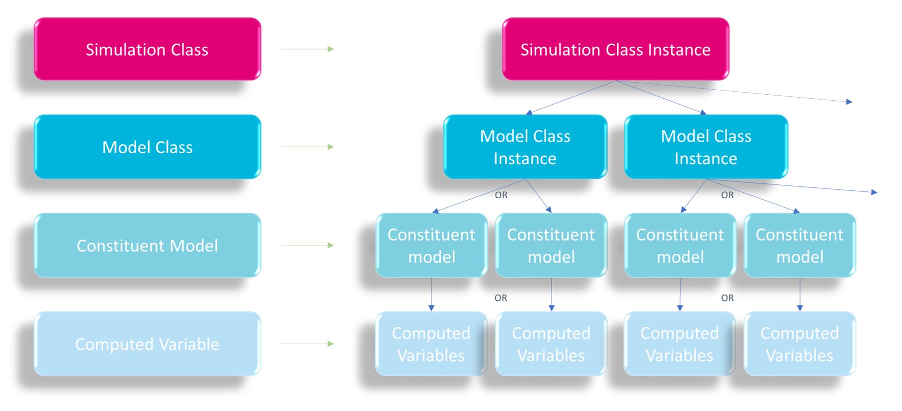

| Simulation Class Instance | Potential Uses |
|---|---|
DO |
Simulation of rudimentary dissolved oxygen dynamics such as:
|
Inorganics |
Simulation of relatively simple aquatic ecosystems that experience primary productivity such as:
|
Organics |
Simulation of more complex aquatic ecosystems such as:
|
2 Architecture
This section provides a description of the WQ Module’s architecture. This description is intentionally introductory, and details required to set up and execute simulations that deploy the WQ Module are provided in Chapter 4. The manual’s introduction should be reviewed for instructions regarding the use of interactive components deployed in this manual.
2.1 Context
As our understanding of the natural environment advances, the questions asked of water quality and ecological numerical models are rapidly increasing in breadth and complexity. Setting up, calibrating and executing defensible environmental models has therefore become an increasingly challenging proposition.
The architecture of the WQ Module has been deliberately designed to assist users in overcoming some of these challenges, and in doing so improve the efficiency and effectiveness with which numerical modelling can support environmental management. Importantly, the WQ Module’s architecture provides a mechanism by which users can rapidly initiate and execute water quality simulations without (at least in early modelling stages) concerning themselves with the often time consuming set up and parameterisation of simulated environmental processes.
In short, the WQ Module has been designed to provide immediate and easy access to its supporting state of the art environmental modelling science. The architecture that provides this easy access is tiered and these tiers are described below.
2.2 Simulation Tiers
The WQ Module’s tiers are described below using the nomenclature of Figure 2.1. Every WQ Module simulation has the following tiers:
- Tier 1: Exactly one instance from a simulation class. This is user defined
- Tier 2: A suite of instances from a model class. The suite (and therefore number) of these instances is preset per simulation class. The exceptions to this are the phytoplankton and pathogen model classes, which when included in a simulation class can have as many instances within the suite as required by the user, with one instance (the default) per simulated phytoplankton or pathogen group
- Tier 3: Exactly one constituent model per model class instance (these are user selectable and there may be more than one constituent model available to choose from within a given model class instance)
- Tier 4: At least one computed variable per constituent model (the suite of computed variables is preset within each constituent model)

Notwithstanding the above, a user need not specify any of the above in order to rapidly set up and execute a first pass WQ Module simulation. In this case, the WQ Module will automatically set the simplest instances of the simulation class, model classes, constituent models and computed variables by drawing on library defaults. Simulation tiers are described below.
2.2.1 Tier 1: Simulation Class
This is the highest and overarching tier of the WQ Module’s architecture. Using a single command, this tier sets the overall water quality simulation structure, including the suite of model classes to be deployed (with potentially multiple phytoplankton or pathogen model classes), and therefore the corresponding suite of constituent models and computed variables. The available simulation classes are provided in Table 2.1 as their keywords, together with example uses of each. The simulation class instances are cumulative, that is, a more complex class instance will include all the capability of simpler class instances. Complexity increases with table row in Table 2.1.
Users can simply specify one preset simulation class (e.g. “Organics”) in a water quality control file (Section 4.4 and following sections), and the WQ Module will draw on inbuilt library defaults to automatically construct and execute a water quality simulation, with no further user input required (beyond specification of water quality initial conditions, see Section 4.4.2). For example, a user may simply specify
Simulation Class == Organics
and initial conditions, and the WQ Module will construct itself, execute and report simulation details via a log file. This initial level of simplicity is intended.
2.2.2 Tier 2: Model Class
Each simulation class instance contains a preset suite of model class instances. These suites cannot be changed (although there may be multiple phytoplankton or pathogen model class instances), and are provided in Table 2.2 and as a network in Figure 2.2. For example, simulation class instance “Inorganics” has the fixed suite of oxygen, silicate, inorganic nitrogen, inorganic phosphorus and (potentially multiple) phytoplankton model class instances. The exception to this is pathogens. These can be optionally simulated in any simulation class (or none), and if simulated, potentially multiple pathogen model classes can be included.
| Simulation Class Instance | Model Class Suite |
|---|---|
DO |
|
Inorganics |
|
Organics |
|
2.2.3 Tier 3: Constituent Model
Whilst the suite of model class instances is set per simulation class instance, constituent models are interchangeable within a model class. In this way, a simulation class instance (at Tier 1) can be customised at the constituent model tier (at Tier 3), despite having a preset suite of model classes (at Tier 2, with potentially multiple phytoplankton and/or pathogen model class instances). Available constituent models are provided in Table 2.3, and presented graphically in Figure 2.3 as a direct extension of Figure 2.2. Pathogen model classes (and therefore constituent models) are always optional.
| Model Class | Available Constituent Models |
|---|---|
Oxygen |
O2 |
Silicate |
Si |
Inorganic Nitrogen |
AmmoniumNitrate |
Inorganic Phosphorus |
FRPhs |
FRPhsAds |
|
Organic Matter |
Labile |
Refractory |
|
Phytoplankton |
Basic |
Advanced |
|
Pathogens |
Free |
Attached |
For example, multiple inorganic phosphorus constituent models are available within the inorganic phosphorus model class, where these models execute different water quality processes and contain different computed variables. In this example, this can be set with a single line command:
Inorganic Phosphorus Model == FRPhsAds
… commands …
End Inorganic Phosphorus Model
This allows a user to interchange one phosphorus constituent model for another within the inorganic phosphorus model class, thereby customising the overarching simulation class instance.
The environmental processes simulated within each constituent model are fixed. Despite this, these processes can nonetheless be switched on and off as required, offering an additional layer of customisation. For example, if oxygen is not required to be included in silicate sediment flux calculations, the linkage between these processes and oxygen can be turned off by setting:
Oxygen == OFF
Alternatively, if a user wishes to simulate all inorganic processes other than nitrification for example, then the rate describing this unwanted process can simply be set to zero (as per the following command - the first numerical argument is the nitrification rate) and it will be turned off. All library defaults also set rate processes to zero.
Nitrification == 0.0, 0.0, 1.0
All processes included within each constituent model, and their respective WQ Module commands, are described in Chapter 3 and Chapter 4, respectively.
2.2.4 Tier 4: Computed Variables
Each Tier 3 constituent model contains a fixed set of computed variables. Table 2.4 (which is a direct extension of Table 2.3) provides the mapping between model classes, constituent models and their associated computed variables. These maps are also provided graphically in Figure 2.4, which is an extension of Figure 2.3, but presented in a non-hierarchical form. Click or hover over nodes to track their paths up or down the simulation tree.
For clarity, Figure 2.4 (and elsewhere within this manual) uses acronyms for some computed variable names, and these acronyms are expanded in Appendix P. All references in this manual to “organic matter” are to labile organic computed variables, unless specifically termed as refractory.
| Model Class | Available Constituent Models | Computed Variables |
|---|---|---|
Oxygen |
O2 |
Dissolved oxygen |
Silicate |
Si |
Silicate |
Inorganic Nitrogen |
AmmoniumNitrate |
Ammonium |
Nitrate |
||
Inorganic Phosphorus |
FRPhs |
Filterable Reactive Phosphorus (FRP) |
FRPhsAds |
FRP |
|
Adsorbed FRP |
||
Organic Matter |
Labile |
Labile dissolved and particulate organic carbon, nitrogen and phosphorus |
Refractory |
Labile dissolved and particulate organic carbon, nitrogen and phosphorus |
|
Refractory dissolved carbon, nitrogen and phosphorus and refractory particulate organic matter |
||
Phytoplankton |
Basic |
Phytoplankton concentration and optionally cell density |
Advanced |
Phytoplankton concentration, internal nitrogen, internal phosphorus and optionally cell density |
|
Pathogens |
Free |
Pathogen alive and dead concentrations |
Attached |
Pathogen alive, attached and dead concentrations |
Parameters that govern the behaviour of computed variables are set within each constituent model. Parameters that are not set by the user are populated automatically from the WQ Module library defaults.
2.3 Linkage with TUFLOW FV
2.3.1 Process
Support is currently provided for linkage of the WQ Module with TUFLOW FV. Within this linkage, TUFLOW FV considers the WQ Module as a peripheral model with which it interacts at arm’s length. The role of TUFLOW FV is that it (in approximate run time order):
- Requests the number of water quality constituents from the WQ Module at start up, based on user setup specifications (e.g. the setting of the simulation class instance, with any constituent model modifications)
- Automatically sets up the corresponding number of tracers (one for each computed variable) within its simulation (users do not specify these tracers)
- Is then responsible for the:
- Application of WQ Module initial conditions
- Conservative advection and dispersion of these tracers (that represent the WQ Module’s computed variables)
- Application of WQ Module boundary conditions
- Calling the WQ Module at a user specified time step for the WQ Module to execute non-conservative transformation calculations on the suite of passive tracers
- Writing of WQ Module results files
For example, if a WQ Module simulation was set to consider only dissolved oxygen, then TUFLOW FV would automatically allocate one tracer for the dissolved oxygen variable (the user does not need to specify passive tracers within TUFLOW FV), and advect and disperse that tracer throughout the model domain in response to initial and boundary conditions. At a user defined interval, TUFLOW FV would send the two- or three-dimensional tracer concentration field to the WQ Module for it to be modified in response to non-conservative ecological processes. The WQ Module would then return this modified tracer field to TUFLOW FV for subsequent advection and dispersion, with this exchange process continuing to simulation end.
2.3.2 Treatment of light
The TUFLOW FV heat module must be activated in order to use the WQ Module. One reason for this (beyond the need to compute water temperature) is that the heat module includes calculation of the light field within the model domain. This light field is used by various WQ Module constituent models.
In order to provide this light field, TUFLOW FV splits the shortwave radiation specified in the heat module into four bands:
- near infrared (NIR)
- photosynthetically available radiation (PAR)
- ultraviolet A (UVA), and
- ultraviolet B (UVB)
This split can be executed using TUFLOW FV defaults (recommended), or be user specified (not recommended). The corresponding band extinction coefficients in water with zero suspended sediment can also be specified in TUFLOW FV. Defaults are also available for all these coefficients and are recommended. TUFLOW FV uses these coefficients, along with other simulation properties, to compute the four light band intensities at the faces and centroids of each computational cell. The WQ Module uses the same split into bands as the TUFLOW FV defaults and ensures consistency in the treatment of light between TUFLOW FV and the WQ Module.
The WQ Module can also modify the light field sent to it from TUFLOW FV via calculation of phytoplankton self shading (Section M.1), the absorption of light due to the presence of organic matter and other processes. If this occurs, the WQ Module returns a modified light extinction coefficient field to TUFLOW FV that is then used in subsequent hydrodynamic heat and light calculations. This modification of light by water quality computed variables only occurs for simulation classes beyond DO.
2.4 Linkage with Other Hydrodynamic Models
The above communication between TUFLOW FV and the WQ Module is affected via implementation of a publicly available application programming interface (API). This API effectively sets the rules by which TUFLOW FV and the WQ Module communicate, and separates their roles.
This API has been designed so that TUFLOW FV can drive any other water quality model that includes the API in its compilation. This is intentional, and allows users of other ecological models to access the hydrodynamic power of TUFLOW FV for their simulations. Contact support@tuflow.com for further information or assistance in this regard.